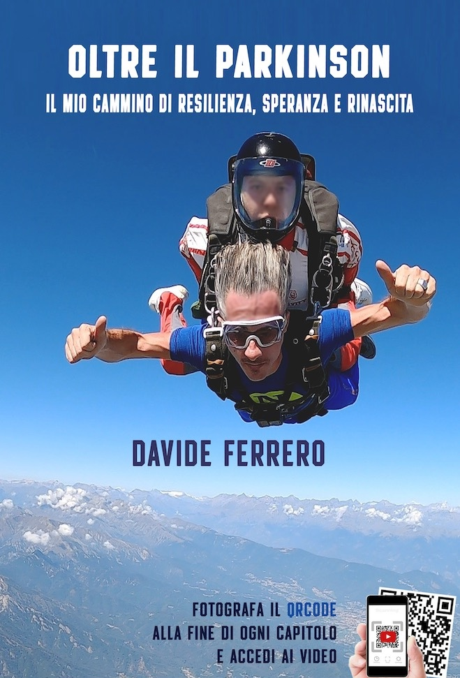

Il mio cammino di resilienza, speranza e rinascita
Un viaggio straordinario oltre i limiti imposti dalla malattia di Parkinson. Davide Ferrero condivide il suo percorso di guarigione attraverso digiuno, alimentazione consapevole, bagni freddi e una nuova visione della vita.
Scopri il LibroQuesto non è solo un libro sulla malattia di Parkinson, ma un manuale di speranza e resilienza. Davide Ferrero racconta la sua esperienza personale e il suo approccio non convenzionale alla guarigione, combinando scienza igienista, digiunoterapia, bagni freddi e una profonda trasformazione interiore.
Scopri il potere del digiuno secco e ad acqua come strumento di autoguarigione e rigenerazione cellulare.
Un approccio nutrizionale basato su frutta e verdura per supportare il processo di disintossicazione e guarigione.
L'esperienza trasformativa dell'immersione in acqua fredda per rafforzare il sistema immunitario e la resilienza mentale.
Strategie pratiche per superare la paura, l'ansia e trasformare le difficoltà in opportunità di crescita.
Un cambiamento di prospettiva sulla malattia: da problema a opportunità di evoluzione personale.
Ogni capitolo include video dimostrativi e testimonianze dirette dell'esperienza vissuta.
Guarda tutti i video capitolo per capitolo direttamente dalla playlist YouTube
Visualizza la playlist completa su YouTube →
La pratica del digiuno terapeutico
Il processo di disintossicazione
Un nuovo approccio alimentare
Un diritto degli invincibili
Avere fiducia nella vita
Vivere bene con il Parkinson
L'esperienza del paracadute
La sfida con il freddo
"La vita è una questione di resilienza, così come per affrontare una sfida sportiva, lo è nell'affrontare una malattia. Il nostro più grande ostacolo non è la gara o la malattia, ma la paura che ne deriva."
— Antonio Rossi, Campione Olimpico e Mondiale nel Kayak Velocità"Questo libro e la tua personale esperienza siano d'aiuto a tutti i pazienti per evitare di cadere nella trappola in cui Davide e milioni di altri ignari malati di Parkinson sono caduti!"
— Dr. Giuseppe Frazzitta, Neurologo - Neuroriabilitatore"Una testimonianza straordinaria di come la determinazione, la fede e un approccio olistico possano trasformare una diagnosi difficile in un'opportunità di rinascita."
— Marco Bianchi, LettorePer informazioni sul libro, per condividere la tua esperienza o per ricevere supporto